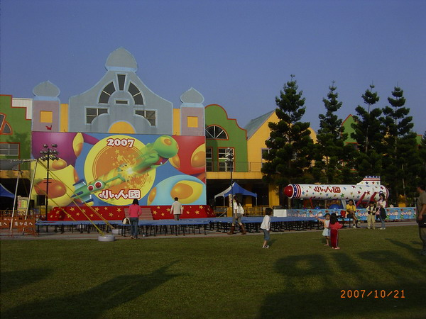

↑假日和朋友到小人國玩，看到現場的砲彈飛人表演，真是值回票價。
注意看第二段的安全降落網，一半比較密，一半比較鬆，為何要這樣設計呢？
砲彈飛人是斜拋運動，水平方向是等速運動，鉛直方向是鉛直上拋，他們是如何算出飛人的落地點呢？
想一想：砲管應該要多長？飛人在發射的過程中受到多大的力？安全網要離地多高？
這些問題答錯不是被當掉留級而已喔.....
感謝 敦皓 辛苦全程手持攝影機拍攝。

↑砲彈飛人的表演場地。
↑砲彈飛人表演之前的小丑雜耍秀，用竹竿頂著碗，只要碗在旋轉就不會掉下來，
但轉久了轉速會變慢，小丑便忙著搖竿子讓碗的轉速加快。我覺得精采是因為只要輕輕搖竿子
轉速就會變快，搖竿子的頻率要和碗的轉速配合，正好說明了頻率相同發生共振的觀念。
旁邊的小朋友們覺得精采是因為要幫忙告訴小丑哪個碗要倒了，小丑急急忙忙趕去搶救，
表情驚險，動作滑稽，真是看門道和看熱鬧的都滿足了！
只可惜來不及用攝影機拍下來，只有照片。
[後記] 後來在 2010台北國際花博 拍到了，一起去看看吧！